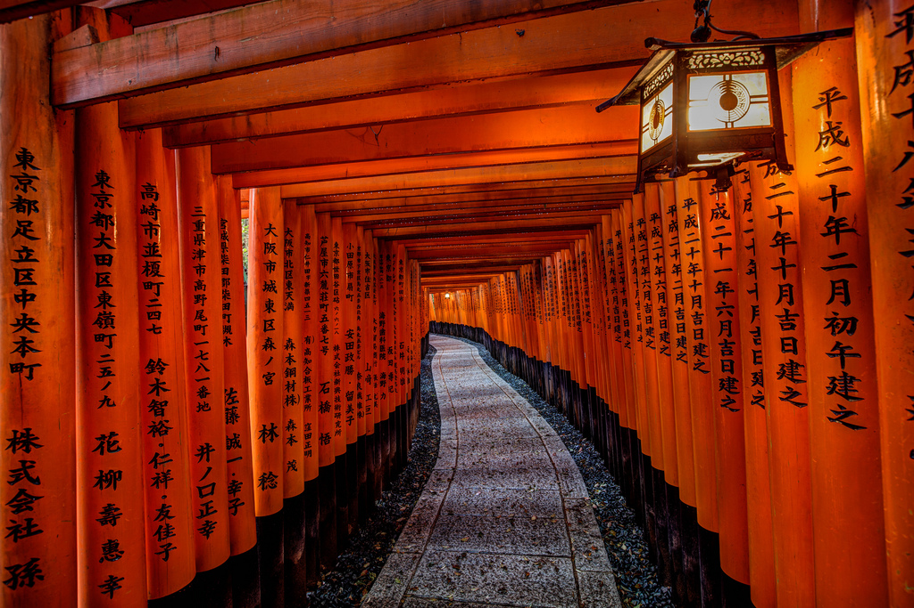

One of Japan's most visited cities, lovely Kyoto - one of the few cities in the country to be spared the devastation of WWII - attracts more than 10 million visitors annually. Most of them are here to explore Kyoto's fine old streets and architecture, much of it unchanged since the Imperial family took up residence here more than 1,000 years ago. Even then, the city was Japan's most important cultural center. This legacy, in fact, continues to this day with its many museums and art galleries, each bursting with important sculptures, paintings, and other art forms. Highlights of Kyoto's Buddhist-influenced architecture include its many well-preserved temples, 30 of which are still in use, and important structures such as the 14th-century Golden Pavilion (Kinkaku-ji), famous for its exquisite gold-leaf-clad exterior. Be sure to also visit Nijo Castle, a 17th-century fortress that has retained its original walls, towers, and moat. Also worth seeing are the castle's beautiful gates, along with its palace with fine interior décor.
Another landmark to visit is the original Kyoto Imperial Palace (Kyoto-gosho). Built in AD 794, it's one of the city's most visited historic sites. Finally, no visit to Kyoto is complete without spending time exploring the Arashiyama Bamboo Grove. This beautiful area of tall bamboo is just a few minutes' walk from the town center.

The UNESCO World Heritage Site Historic Monuments of Ancient Kyoto (Kyoto, Uji and Otsu Cities) encompasses 17 locations in Japan within the city of Kyoto and its immediate vicinity. In 794, the Japanese imperial family moved the capital to Heianjing. Heianjing is located in today’s Kyoto city, a city that imitates Luoyang, China.The locations are in three cities: Kyoto and Uji in Kyoto Prefecture; and Ōtsu in Shiga Prefecture; Uji and Ōtsu border Kyoto to the south and north, respectively. Of the monuments, 13 are Buddhist temples, three are Shinto shrines, and one is a castle. The properties include 38 buildings designated by the Japanese government as National Treasures, 160 properties designated as Important Cultural Properties, eight gardens designated as Special Places of Scenic Beauty, and four designated as Places of Scenic Beauty. UNESCO listed the site as World Heritage in 1994. Kyoto has a substantial number of historic buildings, unlike other Japanese cities that lost buildings to foreign invasions and war; and has the largest concentration of designated Cultural Properties in Japan. Although ravaged by wars, fires, and earthquakes during its eleven centuries as the imperial capital, Kyoto was spared from much of the destruction and danger of World War II. It was saved from the nearly universal firebombing of large cities in Japan in part to preserve it as the primary atomic bomb target. It was later removed from the atomic bomb target list by the personal intervention of Secretary of War Henry L. Stimson, as Stimson wanted to save this cultural center which he knew from his honeymoon and later diplomatic visits. As a result, Nagasaki was then added as a target. The 17 properties of the World Heritage Site originate from a period between the 10th century and the 19th century, and each is representative of the period in which it was built. The historical importance of the Kyoto region was taken into account by the UNESCO in the selection process.